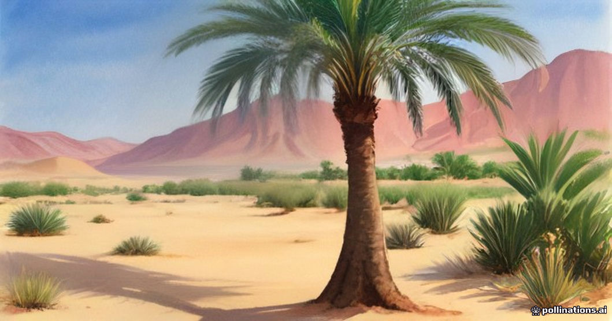

The draa valley route to zagora follows the N9 highway south from Ouarzazate through Agdz and along Morocco's longest river basin. If you are comparing desert routes on a short itinerary, understanding the landscape of this region helps manage expectations before booking. The valley itself is a continuous ribbon of date palms, earth-built ksar villages, and ancient kasbahs carved into volcanic rock, making it one of the most scenic driving corridors in southern Morocco.
However, travelers often confuse reaching Zagora with reaching the deep sand dunes of the Sahara. While Zagora serves as the gateway to the far south, the nearby dunes at Tinfou are modest alluvial mounds rather than the towering Erg Chebbi dunes near Merzouga. If you are deciding between these destinations, evaluating the landscape, driving hours, and desert quality will help you select the right path. Check our detailed guide on /blog/merzouga-vs-zagora-desert for an in-depth breakdown of sand dunes vs stone desert.
The Drive: Ouarzazate to Agdz and the Draa River
Leaving Ouarzazate via the Tizi n'Tinififft mountain pass (1,660 meters elevation), the paved road cuts through jagged black volcanic rock before descending sharply into Agdz. From Agdz down to Zagora, the N9 highway runs parallel to the Draa River bed, flanked by millions of date palms and fortified mudbrick villages (ksour). The drive covers roughly 160 kilometers from Ouarzazate to Zagora, taking approximately 2.5 to 3 hours without stops.
Key Oasis Stops: Kasbah Tamnougalt and Date Orchards
The primary historical highlight along the Draa Valley is Kasbah Tamnougalt, situated just four kilometers outside Agdz. Built in the 16th century, this expansive earthen citadel once served as the administrative center for the region and controlled trans-Saharan trade caravans arriving from Timbuktu. Unlike heavily restored sites, Tamnougalt retains an authentic, quiet atmosphere where visitors can walk through shaded subterranean alleys with local guides.
Further south, small roadside communities like Tansikht and Nkob offer close access to traditional palmeraie irrigation channels (khettaras) and active agricultural land. The regional date harvest peaks between September and November, bringing lively roadside markets across every village along the route.
Scenery Along the Draa Valley Route to Zagora
What makes this drive distinct is the sharp contrast between lush palm groves and arid volcanic mountain backdrop. As you head south, the agricultural riverbanks support crops of alfalfa, henna, and pomegranate beneath a canopy of tall date palms. Earth-built architecture remains dominant throughout the valley, with mudbrick villages blending directly into the surrounding soil.
If you plan to include historical detours before entering the valley, consider visiting /blog/ait-ben-haddou or taking the northern route via /blog/telouet-kasbah-and-skoura-oasis-detour to explore traditional kasbah preservation.
Draa Valley vs. Dades Route to Merzouga
Deciding between the Draa Valley corridor and the Dades/Todra corridor to Merzouga depends on your available travel time and expectations. The Draa route is direct, flatter south of Agdz, and well-suited for tight itineraries. However, Zagora itself does not feature high rolling sand dunes; the landscape is dominated by hamada (rocky desert pavement).
Reaching Erg Chebbi near Merzouga requires driving further east via the Dades Valley or N10 highway, adding roughly 4 to 5 hours of driving each way. The payoff for that extra distance is a true sand sea with dunes reaching up to 150 meters in height. For travelers considering the deeper dune fields beyond Zagora, read our breakdown of /blog/erg-chebbi-vs-chigaga.
| Feature | Draa Valley / Zagora Route | Dades / Merzouga (Erg Chebbi) Route |
|---|---|---|
| Driving Time from Marrakech | 7–8 hours (one way) | 9–10 hours (one way) |
| Primary Scenery | Continuous palm oasis, black volcanic passes, mudbrick ksour | Dades Gorge, Rose Valley, massive orange sand dunes |
| Dune Height & Scale | Small sand heaps at Tinfou (10–20 meters) | Massive erg dunes at Erg Chebbi (up to 150 meters) |
| Ideal Trip Duration | 2 Days / 1 Night (fast) or 3 Days | Minimum 3 Days / 2 Nights |
| Road Infrastructure | N9 paved national highway via Tizi n'Tinififft | N9 and N10 highways via Tizi n'Tichka pass |

Illustration, not a photograph — for the real thing, you'll have to stand on the ridge yourself.
Quick answers
A few follow-up questions travelers ask about this.
Is the Draa Valley route fully paved and safe for self-driving?
Yes, the N9 highway from Ouarzazate to Zagora is paved and well-maintained. The mountain section through Tizi n'Tinififft has twisting turns but is easily navigated by a standard 2WD vehicle during daylight hours.
Can I see high sand dunes directly in Zagora?
No. Zagora is an oasis town set in a rocky stone desert (hamada). The closest sand dunes at Tinfou are small mounds under 20 meters high. Large erg dune fields require travel to Erg Chigaga or Erg Chebbi.
When is the best time of year to drive through the Draa Valley?
Autumn (September through November) is ideal due to mild daytime temperatures and the active date harvest along the riverbanks. Spring (March through May) offers green oasis foliage and pleasant weather.
Planning your own route?
Tell us your dates and what matters to you — we'll answer with a straight recommendation, not a brochure.
Send an inquiry See the itineraries